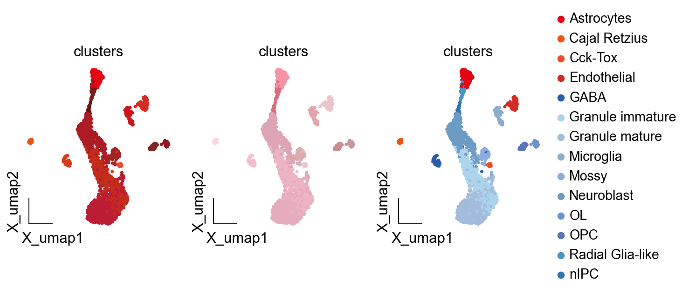
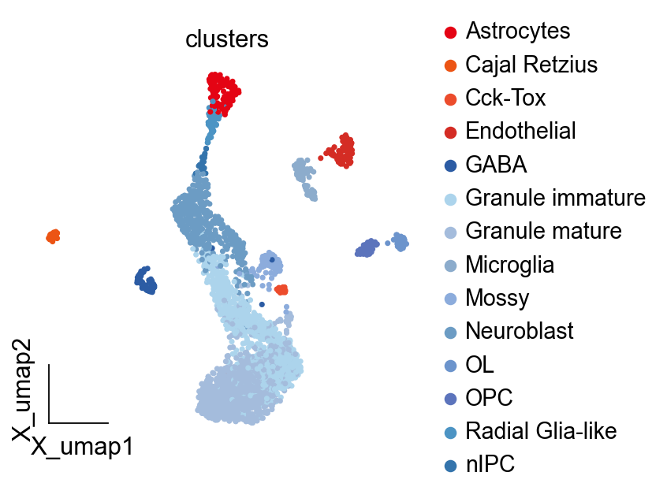
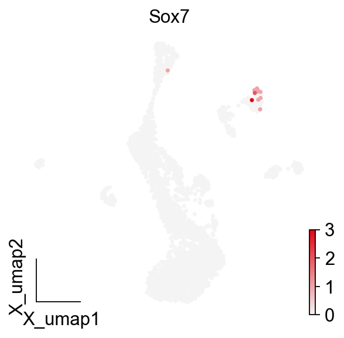

Color system¶
In OmicVerse, we offer a color system based on Eastern aesthetics, featuring 384 representative colors derived from the Forbidden City. We will utilize these colors in combination for future visualizations.
All color come from the book: “中国传统色：故宫里的色彩美学” (ISBN: 9787521716054)
import omicverse as ov
import scanpy as sc
#import scvelo as scv
ov.plot_set()
We utilized single-cell RNA-seq data (GEO accession: GSE95753) obtained from the dentate gyrus of the hippocampus in mouse.
adata = ov.read('data/DentateGyrus/10X43_1.h5ad')
adata
AnnData object with n_obs × n_vars = 2930 × 13913
obs: 'clusters', 'age(days)', 'clusters_enlarged'
uns: 'clusters_colors'
obsm: 'X_umap'
layers: 'ambiguous', 'spliced', 'unspliced'
Understanding the Color System¶
In OmicVerse, we offer a color system based on Eastern aesthetics, featuring 384 representative colors derived from the Forbidden City. We will utilize these colors in combination for future visualizations.
fb=ov.pl.ForbiddenCity()
from IPython.display import HTML
HTML(fb.visual_color(loc_range=(0,384),
num_per_row=24))
| 人籁 | 青粲 | 翠缥 | 水龙吟 | 碧山 | 石发 | 菉竹 | 庭芜绿 | 葱倩 | 漆姑 | 翠微 | 芰荷 | 青青 | 翠虬 | 官绿 | 油绿 | 莓莓 | 螺青 | 春辰 | 麴尘 | 欧碧 | 苍葭 | 兰苕 | 青玉案 |
| 碧滋 | 瓷秘 | 筠雾 | 竹香子 | 鸣珂 | 琬琰 | 出岫 | 王刍 | 春碧 | 执大象 | 青圭 | 绿沈 | 风入松 | 荩篋 | 绞衣 | 素綦 | 苍筤 | 天缥 | 卵色 | 沧浪 | 葭菼 | 山岚 | 冰台 | 青古 |
| 醽醁 | 渌波 | 青楸 | 缥碧 | 翠涛 | 青梅 | 雀梅 | 苔古 | 蕉月 | 干山翠 | 翕赩 | 结绿 | 绿云 | 丹罽 | 黄丹 | 檎丹 | 银朱 | 洛神珠 | 珊瑚赫 | 朱孔阳 | 丹雘 | 水华朱 | 胭脂虫 | 朱樱 |
| 大繎 | 顺圣 | 爵头 | 麒麟竭 | 苕荣 | 扶光 | 十样锦 | 海天霞 | 驿刚 | 朱颜酡 | 赦霞 | 赦尾 | 缙云 | 小红 | 琼琚 | 岱赭 | 朱柿 | 艳炽 | 鹤顶红 | 赤缇 | 纁黄 | 棠梨 | 朱殷 | 石榴裙 |
| 朱草 | 赤灵 | 佛赤 | 綪茷 | 朱湛 | 丹秫 | 木兰 | 杨妃 | 盈盈 | 银红 | 粉米 | 桃夭 | 水红 | 夕岚 | 彤管 | 咸池 | 莲红 | 雌霓 | 縓缘 | 长春 | 渥赭 | 红䵂 | 紫梅 | 绛纱 |
| 茹藘 | 美人祭 | 唇脂 | 牙绯 | 鞓红 | 葡萄褐 | 蚩尤旗 | 紫矿 | 紫诰 | 苏方 | 霁红 | 蜜褐 | 福色 | 黪紫 | 龙膏烛 | 苏梅 | 琅环紫 | 胭脂水 | 紫茎屏风 | 红踯躅 | 胭脂紫 | 魏红 | 紫府 | 魏紫 |
| 地血 | 芥拾紫 | 油紫 | 紫薄汗 | 退红 | 昌容 | 樱花 | 丁香 | 木槿 | 茈藐 | 紫蒲 | 紫紶 | 拂紫绵 | 赪紫 | 三公子 | 齐紫 | 凝夜紫 | 石英 | 香炉紫烟 | 苍烟落照 | 甘石 | 紫菂 | 银褐 | 藕丝褐 |
| 烟红 | 迷楼灰 | 红藤杖 | 鸦维 | 玄天 | 烟墨 | 紫鼠 | 栀子 | 黄白游 | 松花 | 缃叶 | 黄栗留 | 嫩鹅黄 | 黄河琉璃 | 杏子 | 红友 | 库金 | 鞠衣 | 黄不老 | 郁金裙 | 露褐 | 蛾黄 | 光明砂 | 柘黄 |
| 媚蝶 | 黄流 | 韎韐 | 九斤黄 | 弗肯红 | 赤璋 | 如梦令 | 茧色 | 芸黄 | 椒房 | 金埒 | 雌黄 | 密陀僧 | 大块 | 蜜合 | 地籁 | 仙米 | 假山南 | 黄粱 | 石蜜 | 紫花布 | 黄封 | 养生主 | 沙场 |
| 黄螺 | 蒸栗 | 巨吕 | 降真香 | 大云 | 吉金 | 远志 | 射干 | 油葫芦 | 龙战 | 緅絺 | 葭灰 | 珠子褐 | 黄埃 | 沉香 | 明茶褐 | 荆褐 | 驼褐 | 缊韨 | 棠梨褐 | 檀褐 | 朱石栗 | 紫瓯 | 栗壳 |
| 麝香褐 | 椒褐 | 枣褐 | 目童子 | 青骊 | 丁香褐 | 肉红 | 夏籥 | 檀唇 | 紫磨金 | 檀色 | 鹰背褐 | 赭罗 | 老僧衣 | 姜黄 | 半见 | 断肠 | 葱青 | 女贞黄 | 莺儿 | 桑蕾 | 绢纨 | 少艾 | 绮钱 |
| 翠樽 | 田赤 | 禹余粮 | 姚黄 | 太一余粮 | 栾华 | 秋香 | 大赤 | 苍黄 | 老茯神 | 流黄 | 青白玉 | 玉色 | 骨缥 | 黄润 | 缣缃 | 佩玖 | 玄校 | 黄琮 | 石莲褐 | 绿豆褐 | 綟绶 | 茶色 | 濯绛 |
| 黑朱 | 冥色 | 伽罗 | 苍艾 | 群青 | 碧落 | 晴山 | 品月 | 窃蓝 | 挼蓝 | 监德 | 苍苍 | 孔雀蓝 | 青冥 | 柔蓝 | 碧城 | 蓝采和 | 细宇 | 帝释青 | 佛头青 | 骐麟 | 花青 | 优昙瑞 | 暮山紫 |
| 紫苑 | 延维 | 曾青 | 青黛 | 䒌靘 | 缪琳 | 绀蝶 | 獭见 | 天水碧 | 井天 | 云门 | 西子 | 正青 | 扁青 | 法翠 | 吐绶蓝 | 鱼师青 | 软翠 | 青緺 | 螺子黛 | 二绿 | 繱犗 | 铜青 | 青雘 |
| 䌦色 | 石绿 | 竹月 | 月白 | 素采 | 星郎 | 影青 | 逍遥游 | 白青 | 青鸾 | 东方既白 | 秋蓝 | 空青 | 太师青 | 菘蓝 | 育阳染 | 青雀头黛 | 霁蓝 | 瑾瑜 | 缟羽 | 山矾 | 浅云 | 凝脂 | 皦玉 |
| 玉頩 | 二目鱼 | 韶粉 | 香皮 | 明月珰 | 藕丝秋半 | 云母 | 米汤娇 | 酂白 | 吉量 | 天球 | 霜地 | 余白 | 溶溶月 | 月魄 | 冻缥 | 草白 | 不皂 | 绍衣 | 雷雨垂 | 石涅 | 墨黪 | 驖骊 | 京元 |
we can get a color using get_color
fb.get_color(name='凝夜紫')
| num | name | name_en | color_rgb | color_html | |
|---|---|---|---|---|---|
| 161 | 161 | 凝夜紫 | Noctilucence | (68, 36, 84) | #442454 |
Default Colormap¶
We have provided a range of default colors including green, red, pink, purple, yellow, brown, blue, and grey. Each of these colors comes with its own set of sub-colormaps, providing a more granular level of color differentiation.
Here’s a breakdown of the sub-colormaps available for each default color:
Green:
green1:Forbidden_Cmap(range(1, 19))green2:Forbidden_Cmap(range(19, 41))green3:Forbidden_Cmap(range(41, 62))
Red:
red1:Forbidden_Cmap(range(62, 77))red2:Forbidden_Cmap(range(77, 104))
Pink:
pink1:Forbidden_Cmap(range(104, 134))pink2:Forbidden_Cmap(range(134, 148))
Purple:
purple1:Forbidden_Cmap(range(148, 162))purple2:Forbidden_Cmap(range(162, 176))
Yellow:
yellow1:Forbidden_Cmap(range(176, 196))yellow2:Forbidden_Cmap(range(196, 207))yellow3:Forbidden_Cmap(range(255, 276))
Brown:
brown1:Forbidden_Cmap(range(207, 228))brown2:Forbidden_Cmap(range(228, 246))brown3:Forbidden_Cmap(range(246, 255))brown4:Forbidden_Cmap(range(276, 293))
Blue:
blue1:Forbidden_Cmap(range(293, 312))blue2:Forbidden_Cmap(range(312, 321))blue3:Forbidden_Cmap(range(321, 333))blue4:Forbidden_Cmap(range(333, 339))
Grey:
grey1:Forbidden_Cmap(range(339, 356))grey2:Forbidden_Cmap(range(356, 385))
Each main color can be represented as a combination of its sub-colormaps:
green = green1 + green2 + green3red = red1 + red2pink = pink1 + pink2purple = purple1 + purple2yellow = yellow1 + yellow2 + yellow3brown = brown1 + brown2 + brown3 + brown4blue = blue1 + blue2 + blue3 + blue4grey = grey1 + grey2
These colormaps can be utilized in various applications where color differentiation is necessary, providing flexibility in visual representation.
palette is the argument we need to revise
import matplotlib.pyplot as plt
fig, axes = plt.subplots(1,3,figsize=(9,3))
ov.pl.embedding(adata,
basis='X_umap',
frameon='small',
color=["clusters"],
palette=fb.red[:],
ncols=3,
show=False,
legend_loc=None,
ax=axes[0])
ov.pl.embedding(adata,
basis='X_umap',
frameon='small',
color=["clusters"],
palette=fb.pink1[:],
ncols=3,show=False,
legend_loc=None,
ax=axes[1])
ov.pl.embedding(adata,
basis='X_umap',
frameon='small',
color=["clusters"],
palette=fb.red1[:4]+fb.blue1,
ncols=3,show=False,
ax=axes[2])
<AxesSubplot: title={'center': 'clusters'}, xlabel='X_umap1', ylabel='X_umap2'>
{kind=link}

color_dict={'Astrocytes': '#e40414',
'Cajal Retzius': '#ec5414',
'Cck-Tox': '#ec4c2c',
'Endothelial': '#d42c24',
'GABA': '#2c5ca4',
'Granule immature': '#acd4ec',
'Granule mature': '#a4bcdc',
'Microglia': '#8caccc',
'Mossy': '#8cacdc',
'Neuroblast': '#6c9cc4',
'OL': '#6c94cc',
'OPC': '#5c74bc',
'Radial Glia-like': '#4c94c4',
'nIPC': '#3474ac'}
ov.pl.embedding(adata,
basis='X_umap',
frameon='small',
color=["clusters"],
palette=color_dict,
ncols=3,show=False,
)
<AxesSubplot: title={'center': 'clusters'}, xlabel='X_umap1', ylabel='X_umap2'>
{kind=link}

Segmented Colormap¶
When we need to create a continuous color gradient, we will use another function: get_cmap_seg, and we can combine the colors we need for visualization.
colors=[
fb.get_color_rgb('群青'),
fb.get_color_rgb('半见'),
fb.get_color_rgb('丹罽'),
]
fb.get_cmap_seg(colors)

colors=[
fb.get_color_rgb('群青'),
fb.get_color_rgb('山矾'),
fb.get_color_rgb('丹罽'),
]
fb.get_cmap_seg(colors)

colors=[
fb.get_color_rgb('山矾'),
fb.get_color_rgb('丹罽'),
]
fb.get_cmap_seg(colors)

ov.pl.embedding(adata,
basis='X_umap',
frameon='small',
color=["Sox7"],
cmap=fb.get_cmap_seg(colors),
ncols=3,show=False,
#vmin=-1,vmax=1
)
<AxesSubplot: title={'center': 'Sox7'}, xlabel='X_umap1', ylabel='X_umap2'>
{kind=link}
